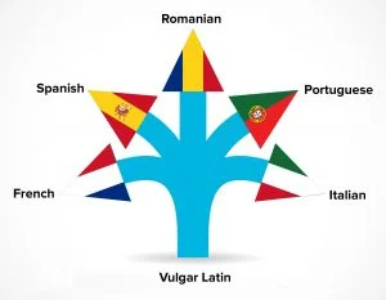
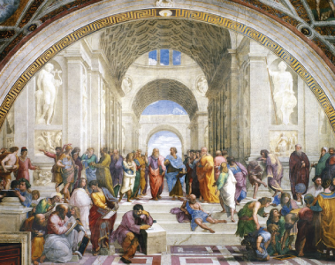

La importancia del "Imperialismo" para la perduracion y avance del conomicimiento.

Punto de Bifurcacion
División de una cosa en dos ramales, brazos o puntas.
Una de las claves del éxito radica directamente en las personas que nos rodean durante nuestro proceso de crecimiento, tanto profesional como personalmente. Arnold schwarzenegger afirma como hubiera sido imposible para él llegar hasta la posición en la que se encuentra actualmente si no hubiera sido por la ayuda de sus profesores, familiares y otros conocidos que lo acompañaron y, más importante que eso, le brindaron conocimiento. Conocimiento que fue clave para todos y cada uno de los momentos de su vida. “Pueden llamarme como ustedes quieran.. pero nunca me llamen un hombre hecho a sí mismo” [1] .
Diego Dreyfus centra la tesis de su discurso en lo que él llama “El punto de bifurcación” [2], esta Bifurcación consiste en la división de algo entre dos ramas. Dreyfus se refiere a este concepto desde un sistema, en donde la primera opción es que este sistema termine y la segunda que pase a un orden mayor, por lo tanto, al llegar a este punto (saturarse) el sistema tomará una de estas dos rutas. Lo más importante de este concepto es que llega a ser aplicable para distintos sistemas, tanto los usados por Dreyfus como el de una persona por sí misma o el de una autopista, u otros sistemas como el mundo completo e incluso el universo.
Teniendo en cuenta ambos conceptos, el paso del conocimiento y el punto de bifurcación, se puede encontrar una relación increíblemente interesante entre el proceso educativo que cada persona lleva con estos dos conceptos. Para ello, nos debemos remontar varios siglos atrás, años en los que el “Imperialismo” era un común denominador para describir el funcionamiento de un estado. Unos de los mayores ejemplos de estos siendo el gran Imperio Romano o el Imperio Britanico, los cuales dominaron gran parte del mundo y que hoy en día podemos ver algunos de sus restos como lo pueden ser el idioma ingles que esparció el Imperio Britanico en lo que son hoy en día países como Estados Unidos o Nueva Zelanda.
Este tipo de relaciones permiten un paso de conocimiento no solo de generación en generación sino también entre sociedades. Por lo tanto, considerando un mundo sin estos “Imperialismos” podríamos afirmar que no se hubiese logrado llegar al nivel de conocimiento al que ha llegado la humanidad hoy en día. Un claro ejemplo es el idioma, el cual es una de las herramientas principales para el acceso al conocimiento, este permite la comunicación entre una sociedad con otra y por ende el paso de conocimiento de una a la otra. Se puede decir que hoy en día existe un tipo de imperialismo con el idioma inglés, ya que este idioma ha impuesto cierto “control” sobre sociedades que manejan otro idioma, pero a pesar de manejar otro idioma es indispensable que sus integrantes tengan completo control sobre este.
Este ejemplo también sirve para explicar el concepto de la bifurcación, siendo uno de los casos más conocidos el del latin o “Las lenguas romances”. El latin, un idioma dominante hace unos siglos, alcanzó tal nivel de saturación hasta llegar necesariamente a un punto de bifurcación en donde sus dos opciones fueron las de terminar o pasar a un orden mayor. En este caso el latin paso a un orden mayor, derivando en distintas lenguas (Lenguas Romances) las cuales dominan el mundo hoy en día, siendo una de estas lenguas el Español.
Con ello, se puede observar la importancia y la raíz directa de la transferencia del conocimiento, siendo esta una clave para la formación educativa y personal de cualquier integrante de una sociedad. Cabe resaltar cómo estos “Imperios” no son solo una cosa del pasado, sino que siguen siendo parte de nuestras sociedades de una forma un poco distinta, remontándonos a su definición “El imperialismo es la doctrina que defiende la dominación de una nación o Estado sobre otros territorios y pueblos a través de la adquisición de tierras o la imposición de un control político y económico” [3] podemos afirmar que hoy en dia seguimos bajo imperios, siendo los más notables el lenguaje, y siendo un ejemplo claro los lenguajes de programación (Ya que los lenguajes que trabajamos así sea para un proyecto en Español es trabajado casi completamente en inglés).

Paso del Conocimiento
Apropiacion del conocimiento que fue tranferido por otra persona a nosotros.